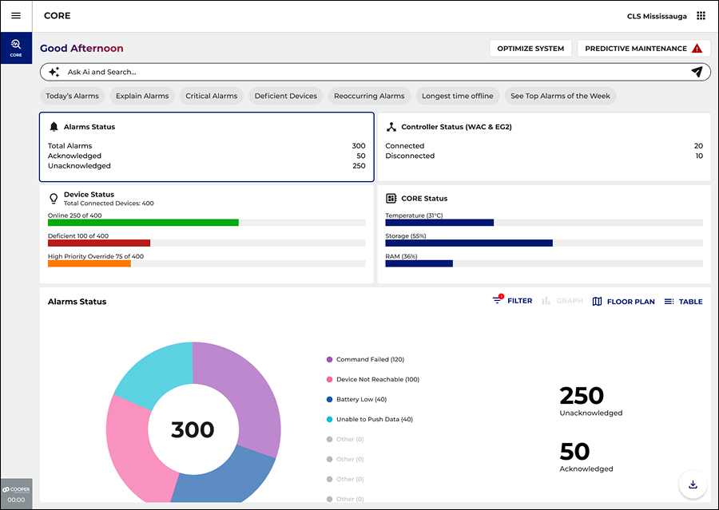
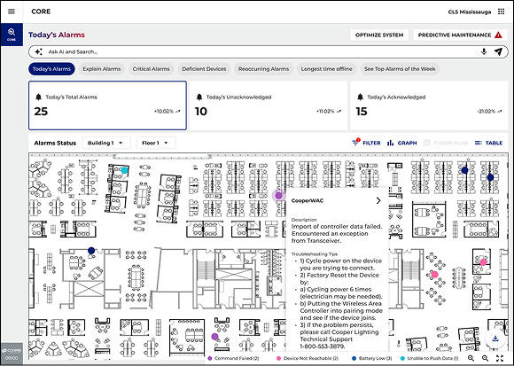
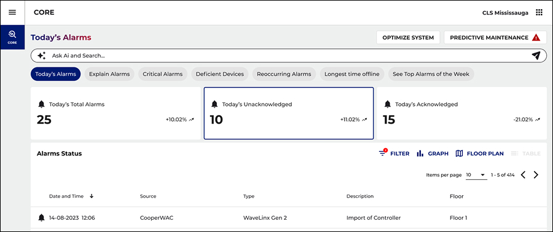
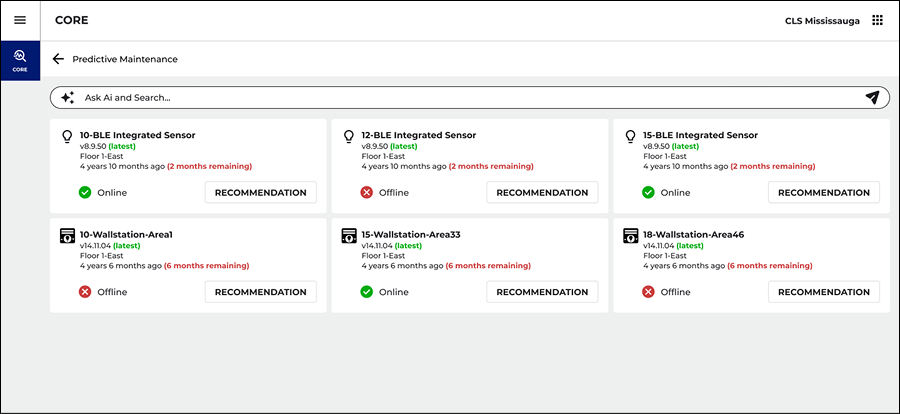
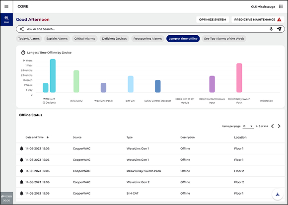
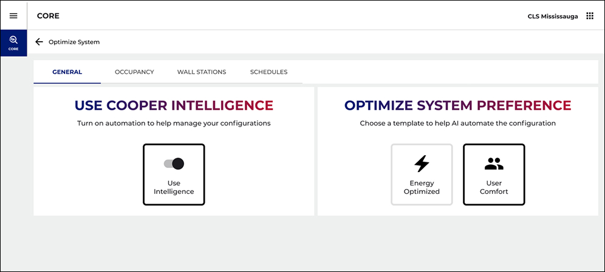
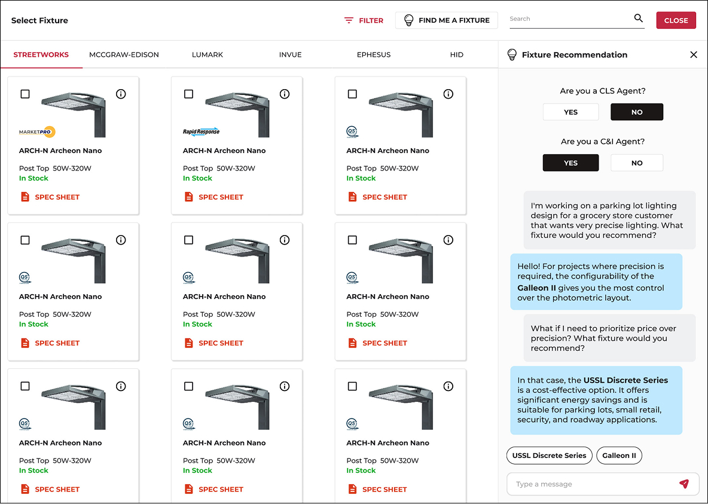
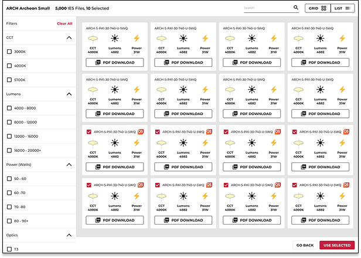
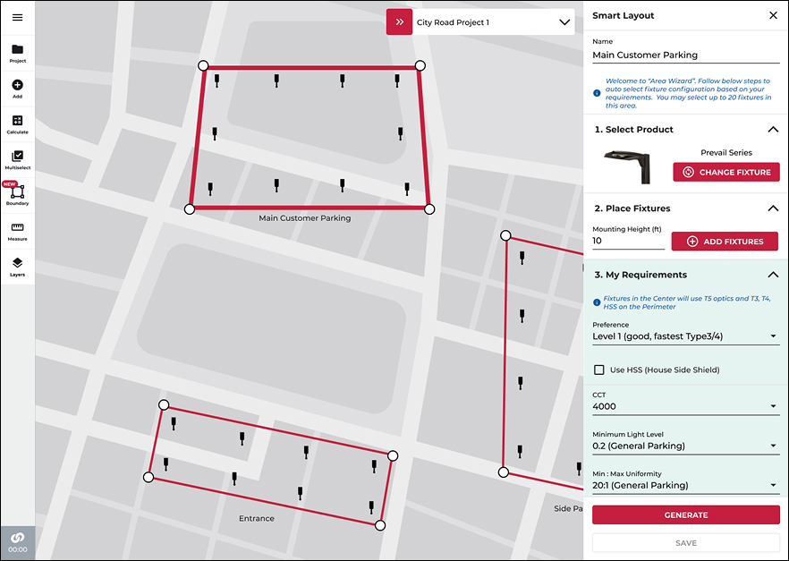

CORE manages thousands of connected lighting devices across enterprise buildings, controllers, sensors, wall stations, relay packs. At scale, the platform generated a relentless stream of alarms and status codes that only specialists could decode, and maintenance stayed stubbornly reactive: teams found out a device had failed only after it went dark.
My mandate was to define how AI should live inside an established enterprise product, not a bolted-on chatbot, but woven through the daily workflow. Three pillars emerged: conversational access, explainability for every alarm, and prediction ahead of failure.
A single large site carried hundreds of devices and a daily flood of fault codes, almost none of which a facility manager could decode without help. AI had an obvious job from day one.
A single Ask AI & Search bar sits atop every screen, with one-tap intents for the questions teams ask each morning. The same answer reads three ways, a floor plan, a building roll-up, or a table.



AI only earns its place if it helps the person on the floor at 2am. Framing the assistant as explanation plus a concrete action, not open chat, kept every answer specific, sourced from a real device, and trustworthy.
The shipped Explain Alarms panel pairs a plain-language cause with a numbered fix, while Predictive Maintenance ranks devices by silence and estimated lifespan so the worst actors surface first.



The same intelligence reaches sales and specification. A conversational Fixture Recommendation assistant turns a plain brief into specific products, then connects to a searchable library of 5,000 IES files and an Area Wizard that auto-places fixtures on a real site map.



Searchable IES library, 5,000 photometric files filtered and exported in a click · Smart Layout Area Wizard auto-places up to 20 fixtures to hit a target level and uniformity.
Anchoring AI to existing pain, the alarm wall, gave it an obvious job from day one. The next step is making confidence and provenance first-class, showing why the AI predicted a failure, not just that it did, and exposing what the optimization loop has learned over time.
The goal was never to add AI to a dashboard. It was to make a 400-device building answer a question, and tell you what to do next, the way the best technician on the team would.